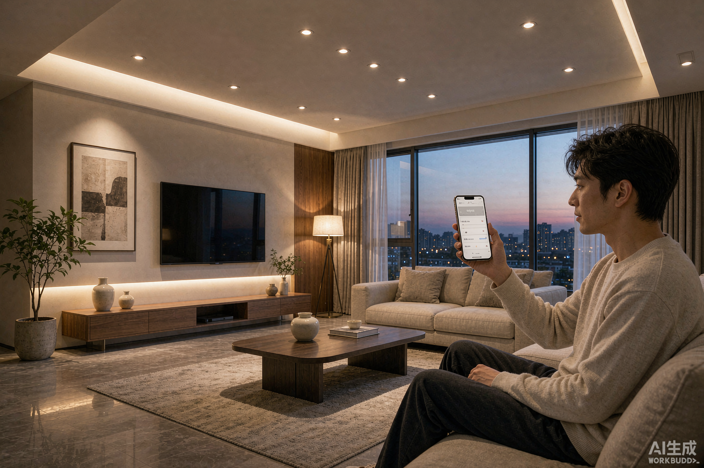
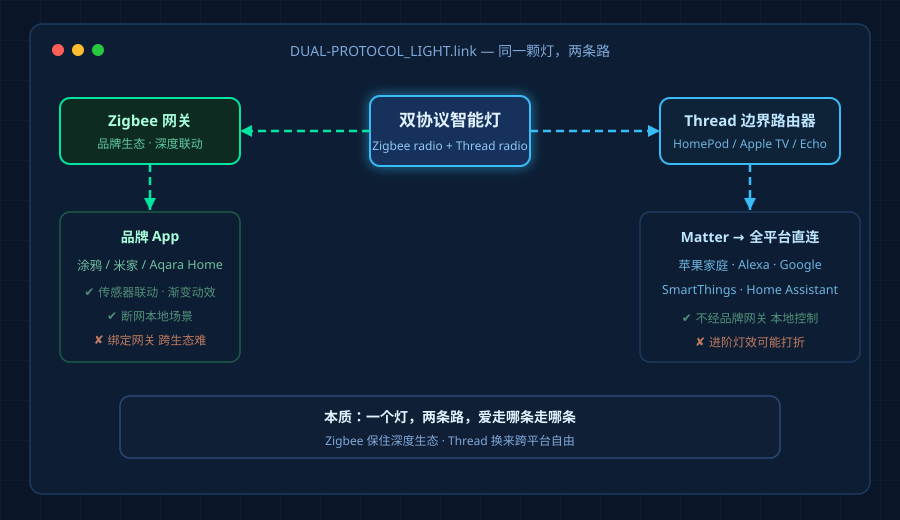
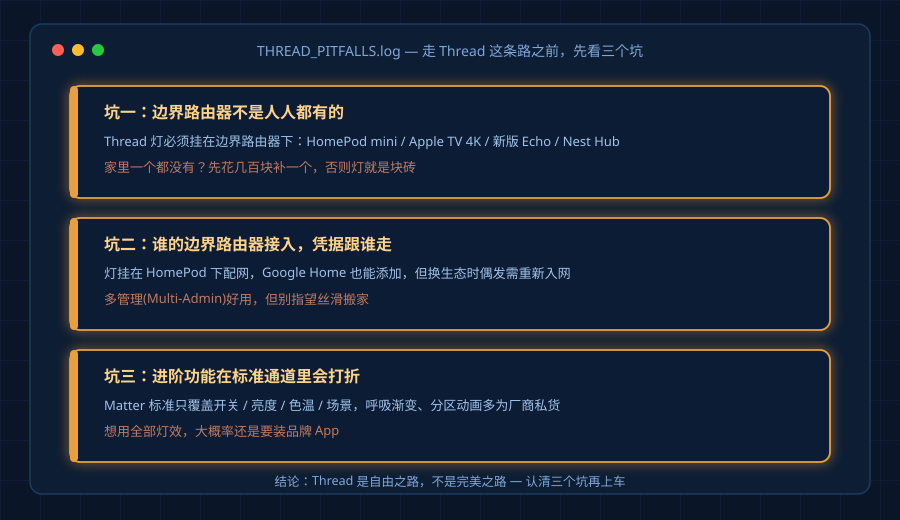
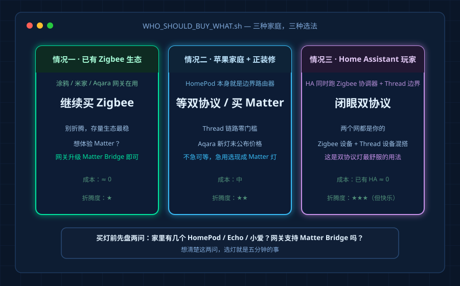

刚结束的 IFA 2026 上，Aqara 一口气发了五款灯——落地灯、筒灯、灯带、户外串灯、屋檐灯，全部支持 Zigbee + Thread 双协议。消息一出，后台和评论区被同一个问题刷屏：
"我现在买的 Zigbee 灯，会不会两年后就淘汰？"
这个问题值得认真回答，因为它背后藏着很多人对协议的误解。
先搞清楚：双协议灯到底多了什么
很多人以为 Thread 和 Zigbee 是竞争关系，其实它们都是跑在 2.4GHz 上的 Mesh 组网技术，真正竞争的只有"入口"：
- Zigbee 链路：灯 → Zigbee 网关 → 各自的 App（涂鸦、米家、Aqara Home）。优点是生态成熟、响应快、能用到传感器联动等深度功能；缺点是被网关绑定。
- Thread 链路：灯 → Thread 边界路由器 → Matter → 苹果 Home / Alexa / Google Home / SmartThings / Home Assistant 全都原生直连，不经过任何品牌网关。
双协议灯的本质是：一个灯，两条路，你爱走哪条走哪条。用 Thread 时它就是一颗原生 Matter 灯，用 Zigbee 时它又回到熟悉的品牌生态。

那现有的 Zigbee 灯会过时吗？
不会。至少 2028 年之前不用担心。
三个理由：
- 存量太大。全球 Zigbee 灯具保有量是 Matter 灯的十倍以上，涂鸦、宜家、飞利浦 Hue、绿米的存量设备不可能被抛弃。
- 网关桥接已经成熟。涂鸦和 Aqara 的新款网关都支持 Matter Bridge，你的 Zigbee 灯通过网关翻译后，一样能出现在苹果家庭里。多一跳，但功能没少。
- Zigbee 深度功能 Matter 暂时给不了。分组渐变、传感器联动脚本、断网本地场景这些，品牌生态反而做得更好。
换句话说：双协议灯是给"还没买的人"多一个选项，不是给"已买的人"发淘汰通知。
Thread 那条路的坑，先说清楚
别被"原生 Matter"四个字冲昏头，Thread 链路有三个坑：
坑一：边界路由器不是人人都有的。 Thread 灯必须挂在一个边界路由器下面——HomePod mini、Apple TV 4K、新版 Echo、Nest Hub 都可以当，但你家里如果一个都没有，就得先买一个。
坑二：谁的边界路由器接入，谁说了算。 灯挂在 HomePod 下，Google Home 里也能添加，但配网凭据跟路由器走，换生态时偶尔要重新入网。
坑三：进阶功能会打折。 走 Matter 标准通道，色温亮度开关没问题，但呼吸渐变、分区动画这类厂商私货，往往只在自家 App 里开放。

三种情况，三种选法
情况一：家里已经是 Zigbee 生态（涂鸦/米家/Aqara 网关） 继续买 Zigbee 灯，别折腾。想体验 Matter，把网关固件升到支持 Matter Bridge 即可，成本最低。
情况二：苹果家庭为主，正在装修 可以等双协议灯上市（Aqara 这批还没公布价格），或者直接买现成的 Matter over Thread 灯泡。反正你家里 HomePod 本身就是边界路由器，Thread 链路零门槛。
情况三：全屋用 Home Assistant 的玩家 闭眼双协议。HA 同时跑 Zigbee 协调器和 Thread 边界路由器，两个网都是你的，这是双协议灯最舒服的用法。

一句话总结
双协议不是"Zigbee 要死了"，而是"以后不用再赌协议"。 已装修的用好 Matter Bridge，正在装的优先看家里谁是控制中枢，纠结症的答案从来不在协议参数里，而在你已经买了什么设备上。
买灯之前先盘点家里：有几个 HomePod / Echo / 小爱音箱？网关支不支持 Matter Bridge？想清楚这两问，选灯就是五分钟的事。
作者从事涂鸦 Zigbee 智能照明方案工作，关于智能灯协议、驱动选型的问题欢迎留言交流。